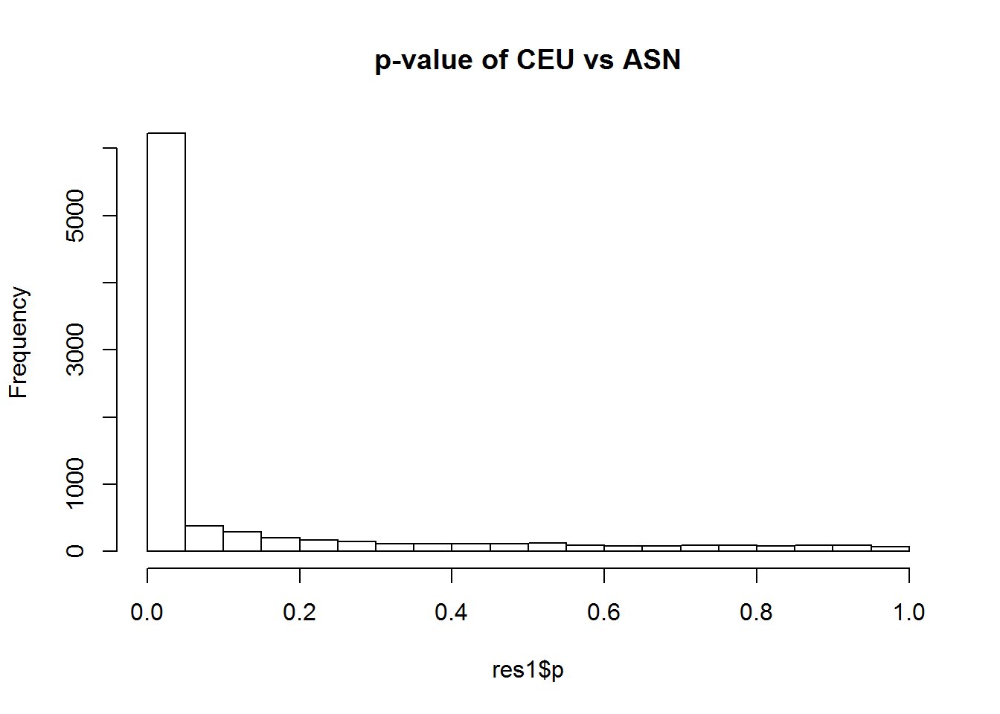
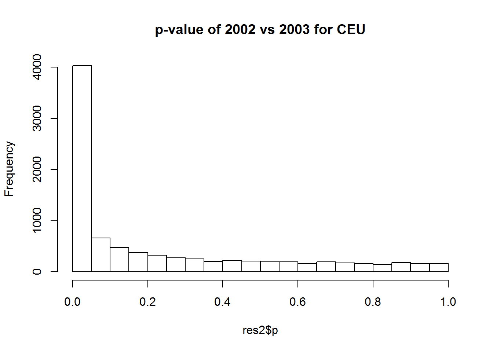
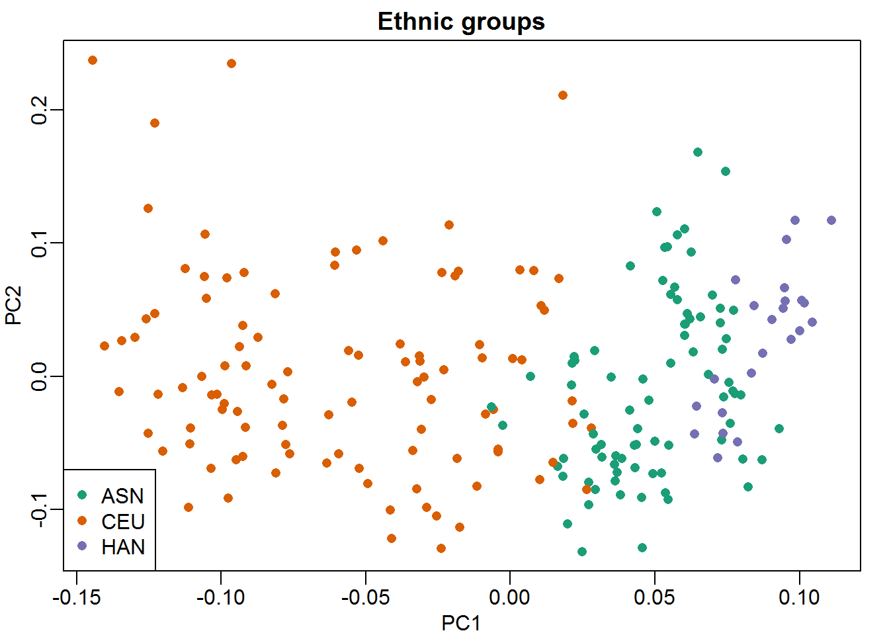
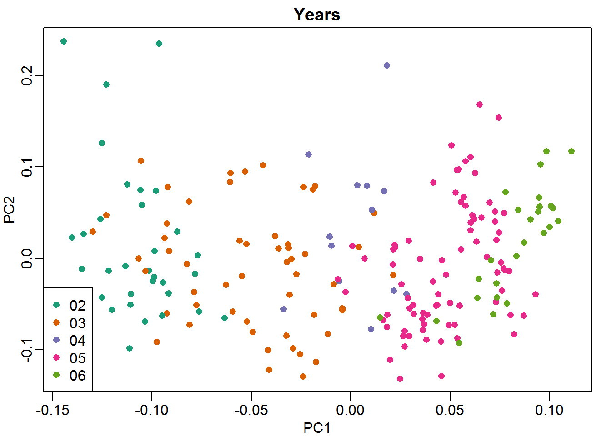

Load Libraries and Datasets
library(Biobase)
library(rafalib)
library(genefilter)
library(GSE5859)
data(GSE5859)Gene Expression Levels
geneExpression = exprs(e)Print Date Information
sampleInfo = pData(e)
head(sampleInfo$date)## [1] "2003-02-04" "2003-02-04" "2002-12-17" "2003-01-30" "2003-01-03"
## [6] "2003-01-16"Printing a Table Summarizing Ethnic Groups by Year
year = factor( format(sampleInfo$date,"%y") )
tab = table(year,sampleInfo$ethnicity)
print(tab)##
## year ASN CEU HAN
## 02 0 32 0
## 03 0 54 0
## 04 0 13 0
## 05 80 3 0
## 06 2 0 24DIFFERENTIAL EXPRESSION ANALYSIS
#remove control genes
out <- grep("AFFX",rownames(geneExpression))Use a t-test to perform differential expression analysis
# between CEU and ASN
eth <- sampleInfo$ethnicity
ind<- which(eth%in%c("CEU","ASN"))
res1 <- rowttests(geneExpression[-out,ind],droplevels(eth[ind]))
# between 2002 vs 2003 within CEU
ind <- which(year%in%c("02","03") & eth=="CEU")
res2 <- rowttests(geneExpression[-out,ind],droplevels(year[ind]))Plot Histograms For p-values
hist(res1$p, main="p-value of CEU vs ASN")
hist(res2$p, main="p-value of 2002 vs 2003 for CEU")
Remove a Redundant Sample
cors <- cor(exprs(e))
Pairs=which(abs(cors)>0.9999,arr.ind=TRUE)
out = Pairs[which(Pairs[,1]<Pairs[,2]),,drop=FALSE]
if(length(out[,2])>0) e=e[,-out[2]]Remove Control Probes From Analysis
out <- grep("AFFX",featureNames(e))
e <- e[-out,]Create a detrended gene expression data matrix
y <- exprs(e)-rowMeans(exprs(e))Extract Information on Dates and Ethnic Group
dates <- pData(e)$date
eth <- pData(e)$ethnicityPerform PCA
s <- svd(y)
##Plot PC1 and PC2 for Ethnic Groups
cols = as.numeric(eth)
mypar()
plot(s$v[,1],s$v[,2],col=cols,pch=16, xlab="PC1",ylab="PC2")
legend("bottomleft",levels(eth),col=seq(along=levels(eth)),pch=16)
title("Ethnic groups")
##Plot PC1 and PC2 for Years
cols = as.numeric(year)
mypar()
plot(s$v[,1],s$v[,2],col=cols,pch=16, xlab="PC1",ylab="PC2")
legend("bottomleft",levels(year),col=seq(along=levels(year)),pch=16)
title("Years")